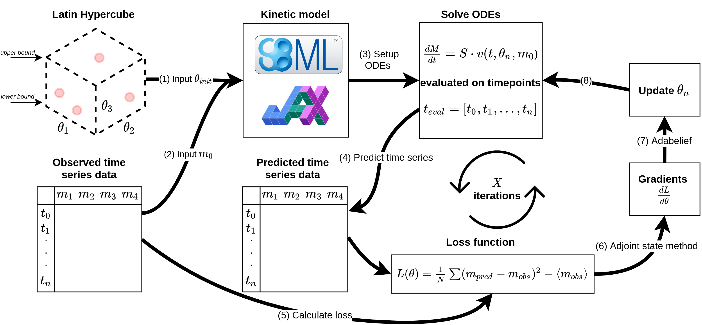

Summary
Introduction
A package for building, simulating and training kinetic models using Jax/Diffrax.

Figure 1: Overview of the training procedure of SBML models being parameterized using techniques from neural differential equations .
Installation
Alternatively, the jaxkinetic model package can be installed using
pip by cloning the repository and from the project folder doing:
git clone https://github.com/AbeelLab/jaxkineticmodel.git
python -m pip install .
TO DO: archive package on pip to make it installable
Minimal simulation example
from jaxkineticmodel.kinetic_mechanisms import JaxKineticMechanisms as jm
from jaxkineticmodel.building_models import JaxKineticModelBuild as jkm
import jax.numpy as jnp
import matplotlib.pyplot as plt
import pandas as pd
import jax
# define a reaction
v1 = jkm.Reaction(
name="v1",
species=['m1', 'm2'],
stoichiometry=[-1, 1],
compartments=['c', 'c'],
mechanism=jm.Jax_MM_Irrev_Uni(substrate="m1", vmax="A_Vmax", km_substrate="A_Km"),
)
# add reaction to a JaxKineticModel_Build class + compartment values
reactions = [v1]
compartment_values = {'c': 1}
kmodel = jkm.JaxKineticModel_Build(reactions, compartment_values)
kmodel_sim = jkm.NeuralODEBuild(kmodel)
# setup simulation
ts = jnp.linspace(0, 15, 1000)
y0 = jnp.array([2, 0])
params = dict(zip(kmodel.parameter_names, jnp.array([1, 1])))
# solve
kmodel_sim = jax.jit(kmodel_sim)
ys = kmodel_sim(ts, y0, params)
ys = pd.DataFrame(ys, columns=kmodel.species_names)
# plot
fig, ax = plt.subplots(figsize=(3, 3))
ax.plot(ts, ys['m1'], label="m1")
ax.plot(ts, ys['m2'], label="m2")
ax.set_xlabel("Time (in seconds)")
ax.set_ylabel("Concentration (in mM)")
ax.legend()
plt.show()

Figure 2: Simple reaction system simulation.
References
[1] Arxiv